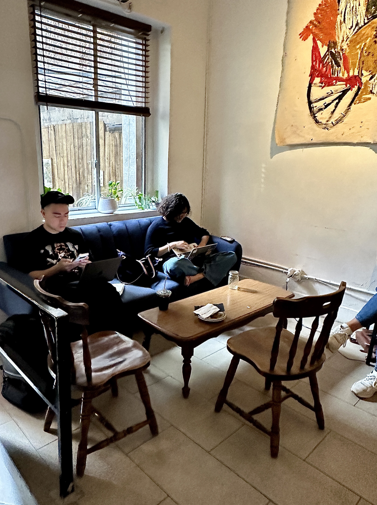
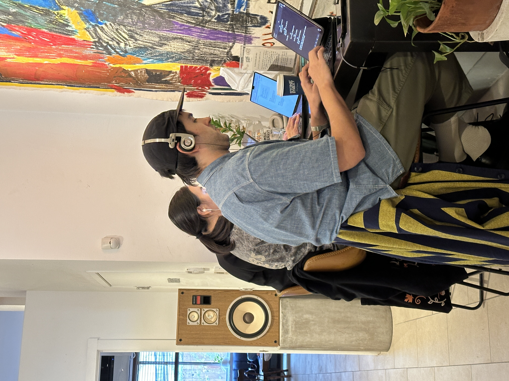
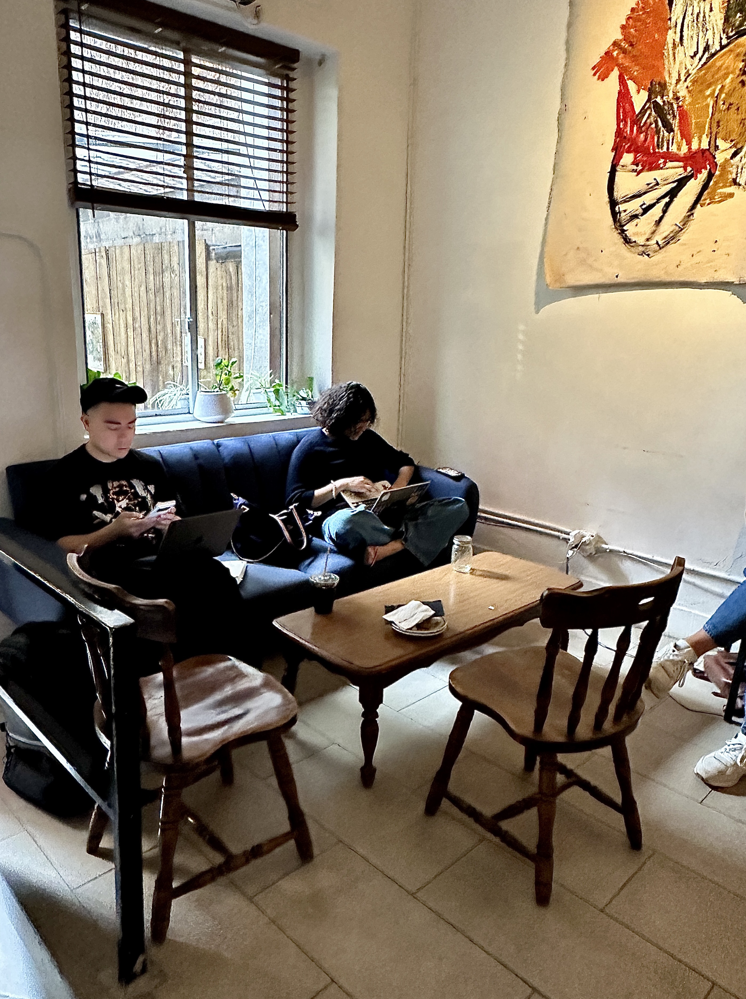
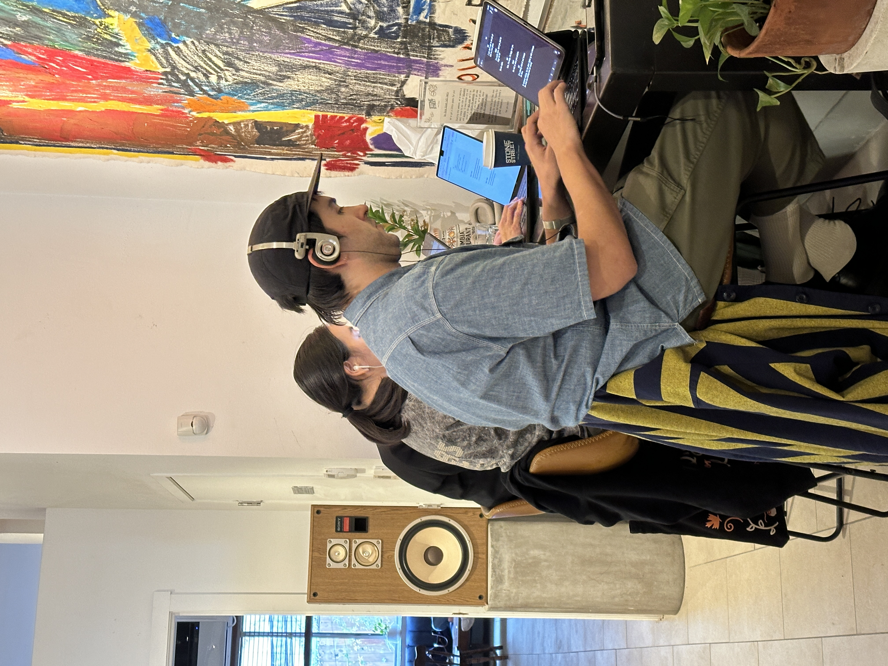
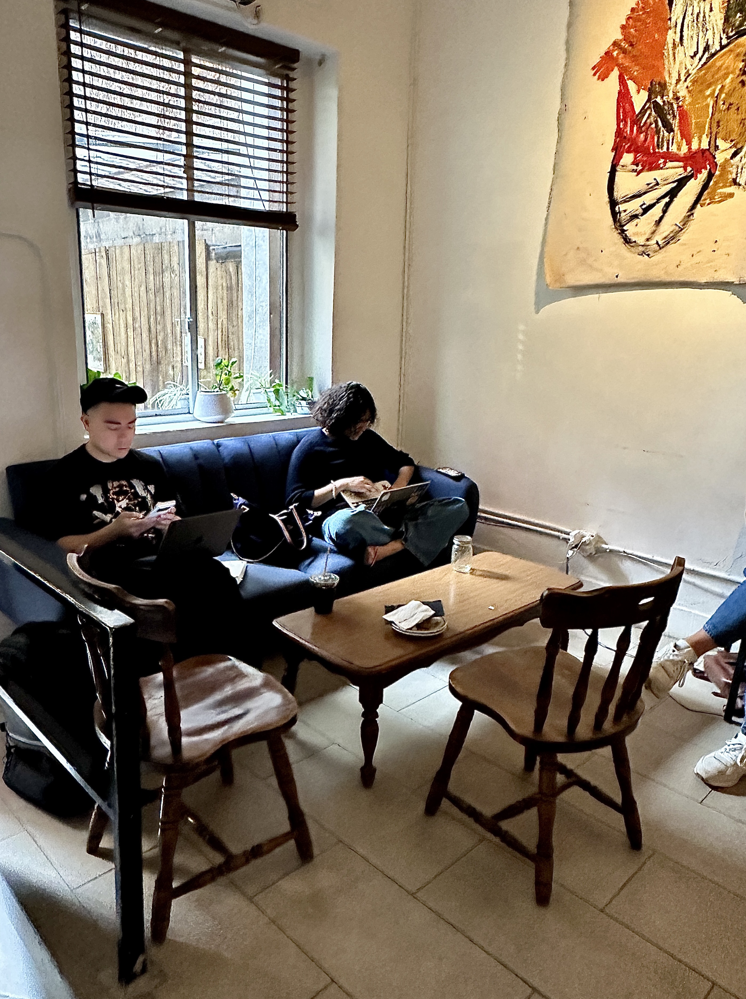
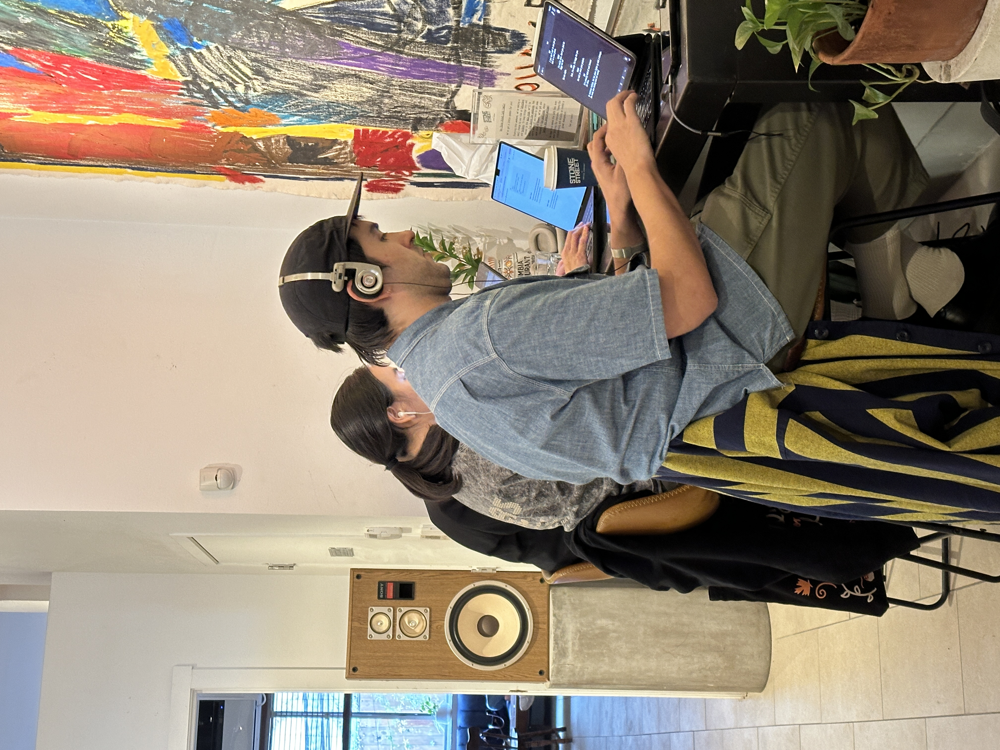

Stone Street Cafe
Ultimate cozy spot with innovative drink options!
 
My Favorite Drinks!
Coldbrew
Hangover Killer
Cafe Latte
Mood & Ambiance
Matcha Einspanner
Toffee Nut Mocha
Dirty Black Sesame Einspanner
Cafe Playlist

 


